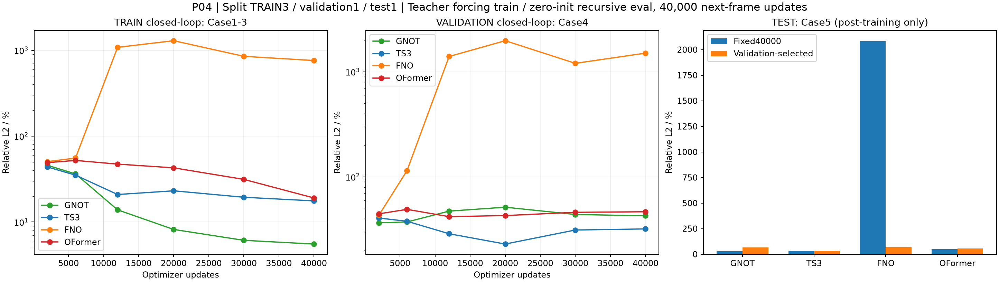
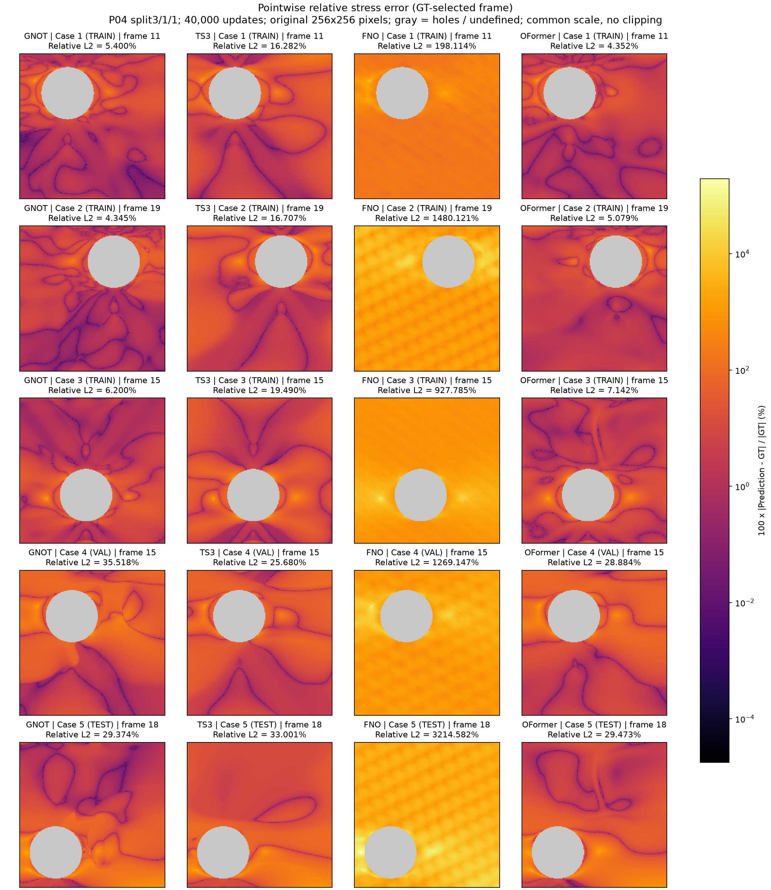
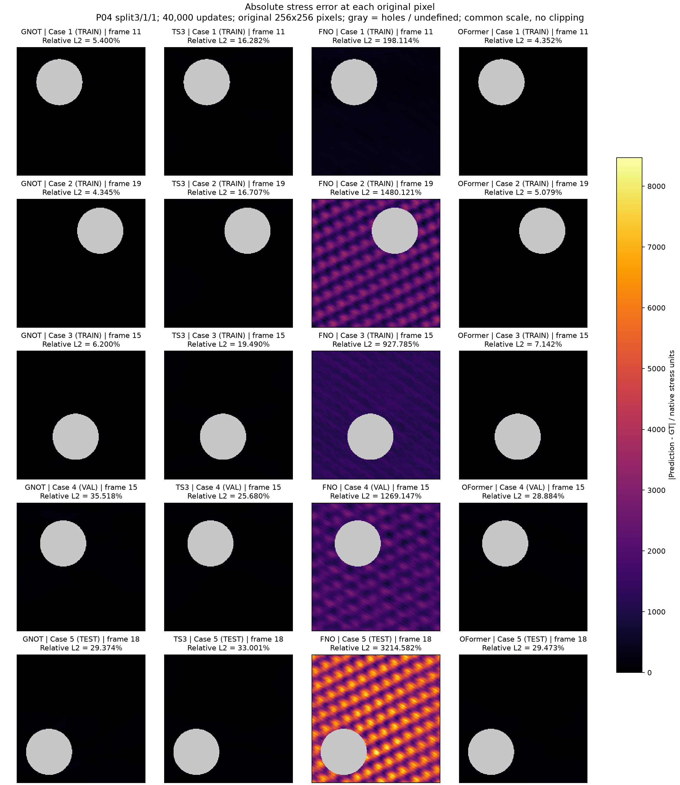
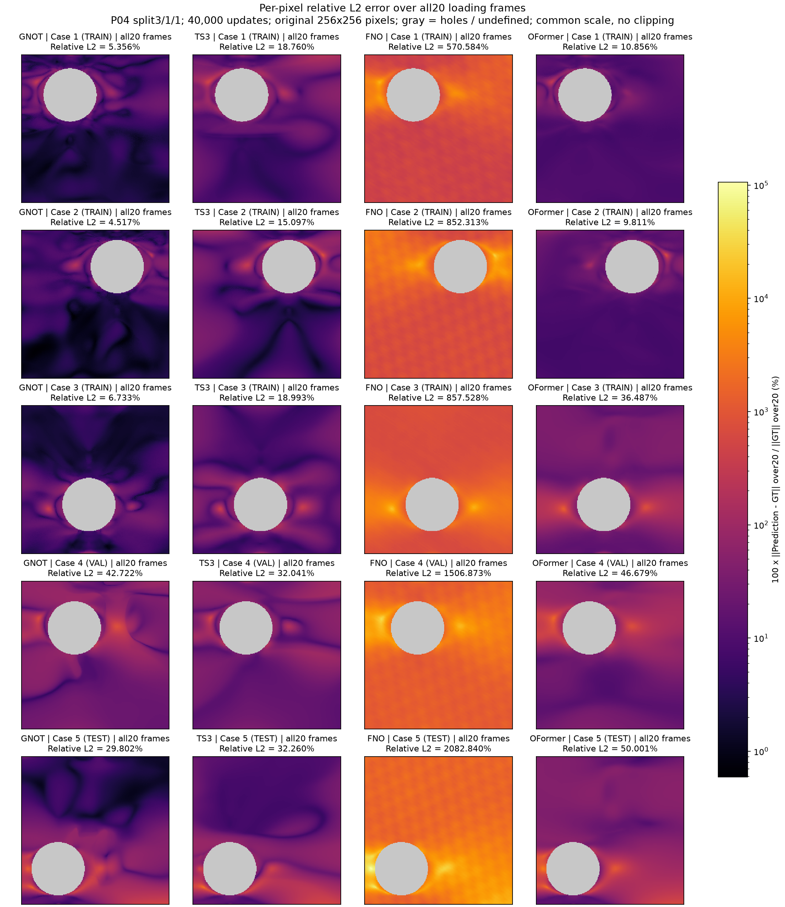
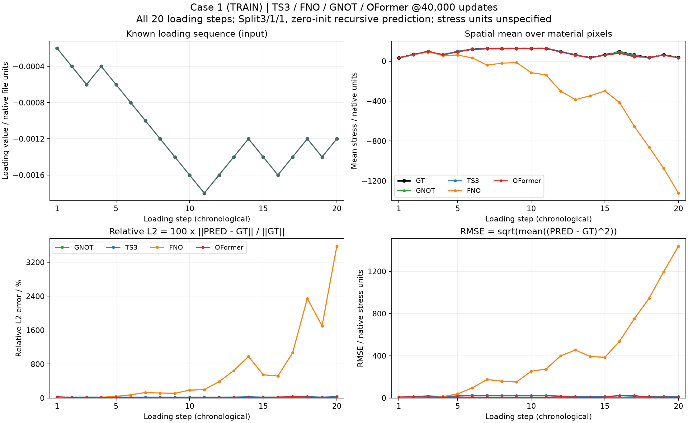
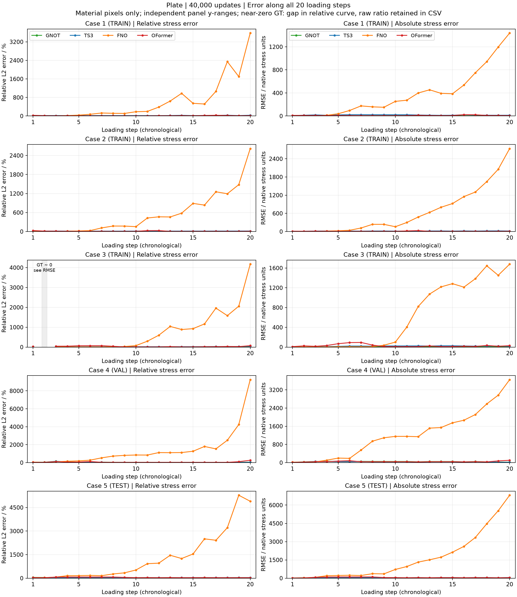

P04 / TEACHER FORCING AND CAUSAL ROLLOUT
板件 · Teacher forcing / 闭环预测
四模型各40,000次下一帧更新，从纯初值训练完成Case1–3 TRAIN；Case4 validation；Case5 test。第0帧载荷与应力均为0；只输入上一帧状态和当前施加载荷，不输入之后的载荷。只有1个validation和1个test样本，结果仅描述这次固定划分。
固定40,000次下一帧更新 · 闭环预测20帧
表中TRAIN、validation、test误差都来自从零状态连续递归预测20帧，材料像素Relative L2（%）；TRAIN对前三例等权平均。训练batch损失则是GT上一帧条件下的下一帧MSE，两种口径不同。点击表头排序。
| 模型 | 参数量 | TRAIN mean (%) | Validation (%) | Test (%) |
|---|---|---|---|---|
| GNOT | 977,681 | 5.5353 | 42.7218 | 29.8021 |
| TS3 | 970,209 | 17.6168 | 32.0406 | 32.2597 |
| FNO | 1,021,046 | 760.1418 | 1506.8731 | 2082.8402 |
| OFormer | 985,906 | 19.0514 | 46.6794 | 50.0014 |

空间主干沿用P03的宽度、层数、注意力头和空间分片设置，输入改为8维、输出改为1维并重新随机初始化。P03每次更新监督20帧，P04每次更新只监督1帧；两者均40000次optimizer更新，但监督帧预算不同，不作为单因素或等监督预算消融。
仅按Validation选优 · 与固定40,000步分开
在预先固定的2000/6000/12000/20000/30000/40000步中，选择Case4从零状态闭环20帧Relative L2最低者；训练仍跑满40,000步，无早停、无test调参。模型选择冻结后才计算Case5的test指标。
| 模型 | Val-best update | Val-best validation (%) | Val-best test (%) |
|---|---|---|---|
| GNOT | 2000 | 36.6729 | 67.2419 |
| TS3 | 20000 | 23.0068 | 33.1410 |
| FNO | 2000 | 43.3846 | 69.1797 |
| OFormer | 12000 | 41.9350 | 55.8397 |
与P03对照 · 两种时间处理方式
P03一次输入完整20步载荷、一次输出20帧；P04每次只输入上一状态和当前载荷，从零状态递归预测。模型主干近似等规模，输入输出层不同；同为40000次更新，P04每次只有1帧监督，P03有20帧。因时序结构、输入信息和监督帧预算同时变化，不将结果归因于单一因素。
| 模型 | P03参数 | P04参数 | P03 test (%) | P04闭环test (%) |
|---|---|---|---|---|
| GNOT | 980,964 | 977,681 | 76.0745 | 29.8021 |
| TS3 | 976,756 | 970,209 | 71.2651 | 32.2597 |
| FNO | 1,023,833 | 1,021,046 | 42.3455 | 2082.8402 |
| OFormer | 989,740 | 985,906 | 72.6574 | 50.0014 |
训练时间与GPU排队
准入等待 1.10 分钟；worker启动 0.88 秒；共享数据设置内部记录 0.26 秒（参考值）；队列总墙钟 182.31 分钟。GPU连续三次、间隔30秒利用率≤10%且全局锁可用才启动。
| 模型 | 训练过程UTC / min | 最终评估与输出UTC / s | 模型阶段UTC / min |
|---|---|---|---|
| GNOT | 74.035 | 5.337 | 74.124 |
| TS3 | 58.327 | 3.294 | 58.382 |
| FNO | 6.938 | 1.827 | 6.969 |
| OFormer | 41.612 | 3.608 | 41.672 |
正式耗时取文件UTC边界：preflight完成至40000步loss落盘为训练过程（含周期validation和保存，不含初始构造/preflight）；之后至summary落盘为最终评估与输出。模型阶段为两段之和。内部perf_counter累计值与UTC间隔出现约7–8%偏差，原始训练/评估/保存细分及CUDA事件值保留在JSON供诊断，未按比例修正，不能作为正式分项或受控吞吐证据。
逐Case · GT / Prediction / 两种误差
正在读取原始数据…
Prediction
Pointwise relative error (%)
Absolute error
移动指针或点击原始像素查看数值。
每格为原始数据点；无平滑或插值，孔洞为灰色。GT与预测共用色标。Relative L2（%）=100×‖PRED−GT‖₂/‖GT‖₂；逐点相对误差=100×|PRED−GT|/|GT|，GT=0时未定义。绝对误差=|PRED−GT|，单位沿用原文件。模型菜单中fixed40000与val-best为不同检查点；所有显示结果均为从第0帧零状态出发的递归预测。查看器的1–20是实际目标帧，初始第0帧不计入误差。
静态误差图 · 固定40,000次下一帧更新
逐点相对误差
打开完整图
逐点绝对误差
打开完整图
全部20帧综合相对误差
打开完整图
无泄漏划分与适用范围
归一化仅用Case1–3：应力RMS=106.52667、载荷缩放=0.0018。梯度更新只包含前三例。每次更新一个全网格的下一帧样本；更新后把该帧GT写回历史。Case4不进梯度，仅用于闭环验证选优；选择冻结后才计算Case5的test指标。
每点8维输入：XYZ（Z=0）、geometry、上一帧应力、上一载荷、当前施加载荷、载荷增量；输出当前下一帧应力。时间推进由脚本循环完成，所有步共用同一空间网络。训练写回GT，验证/test只写回预测值；第0帧零载荷/零应力是用户指定初始条件，不是新增FEM样本，也未提供任何测试集GT应力初始帧。
给定任意长度的外部载荷序列可循环调用同一网络，无需改变输出维度；当前只有20个目标帧数据，未声称已验证25步精度。单帧标量应力窗口是否足以表示所有历史效应由本实验检验，不假定它包含完整物理内部状态。
完整参数、划分、时间与数据SHA JSON · 汇总CSV各Case加载过程 · 固定40,000次下一帧更新
Case1–3 TRAIN；Case4 validation；Case5 test。相对误差的近零GT步留空，原始比值与绝对误差完整保留。

五个Case合并总览 · TRAIN / Validation / Test分列标注
左为Relative L2（%），右为绝对RMSE；各面板完整纵轴范围。相对曲线对近零GT（该case最大帧范数的10⁻¹⁰以下）留空，只有Case3第2步；原始比值仍保留于CSV。
打开合并矢量图